En cuanto al relevamiento de la recuperación de armas de fuego y municiones, indique como fue realizada esa recuperación teniendo en cuenta: -por cada provincia -por tipos de armas de fuego por municiones considerando cada tipo aclarando quienes han sido las personas que hicieron la entrega de las mismas;si eran "legales" y cuántas provenían del "mercado gris" (armas no registradas ni usadas para delinquir") y del negro; las recibidas por el programa de entrega voluntaria;como las incautadas por cuestiones administrativas y aquellas miles enviadas por los poderes judiciales con orden de destrucción.
Procesamiento del Lenguaje Natural en el Congreso de la Nación Argentina
Martín Elias Costa
Data scientist

Ignacio Heredia
Desarrollador fullstack
Somos parte del equipo de desarrollo de la Dirección Nacional de Datos e Información Pública
Formamos parte de la Subsecretaría de Innovación Pública y Gobierno Abierto dentro del Ministerio de Modernización.
Trabajamos de forma transversar a otras áreas de gobierno para promover y mejorar el manejo de información.
Jefatura de Gabinete de Ministros
Congreso de la Nación
Flujo de trabajo en Jefatura
- Categorizar preguntas
- Reconocer información reutilizable
- Despachar al área correspondiente
- Revisar calidad de respuesta
- Contrastar contra informes pasados
Presentación de informe frente al Congreso
Nuestro rol en este flujo
- Mejorar el manejo de información
- Categorización asistida a operadores
- Reconocimiento de preguntas similares
Información no estructurada
{
"numero_informe": <int>,
"numero_pregunta": <int>,
"autor": <string>,
"contexto": <string>,
"pregunta": <string>,
"justificacion": <string>,
"ministerio": <string>,
"area_de_gestion": <string>
}TF-IDF
- Vocabulario generado por todas las palabras disponibles
- Espacio vectorial generado por el vocabulario
- Cada texto es un vector en este espacio
Construcción del ranking de resultados
-
Frecuencia de terminos
Problema: documentos largos son mas propensos a contener palabras que no los representan.
-
Frecuencia de terminos segun tamaño del documento
Construcción del ranking de resultados
-
Frecuencia inversa en documentos
Palabras con mayor TF-IDF
- armas
- municiones
- recuperación
- entrega
- fuego
- destrucción
- miles
- legales
- tipos
- registradas
Distancia entre textos ≈ distancia entre vectores
Nubes de textos
Support vector machines
- Algoritmo para categorización
- Modelo de aprendizaje supervisado desde un set de elementos ya categorizados
- Requiere que la representación de los elementos sea linalmente separables
Separables linealmente
Separables no linealmente
No separables
Clasificando elementos




SVM es independiente de la interpretación de los vectores
Cada coordenada es la representación de una caracteristica del elemento
Permite aplicaciones a categorización de textos, imagenes, caracteres escritos a mano, etc
Volviendo al caso de Jefatura de Gabinete
- TF-IDF para reconocer información reutilizable
- SVM para categorización asistida
- Servidor en Flask para interfaz a usuarios
Impacto en los informes
- Reducción de tiempos de reacción ante un nuevo pedido de informe
- Aumento en la calidad y consistencia de los informes al poder reconocer facilmente preguntas similares
- Reducción en la curva de aprendizaje de categorización para nuevos usuarios
Tecnologías usadas
Reutilización de código
$ pip install textar $ python >>> from textar import TextClassifier
Repositorio del proyecto
github.com/datosgobar/textar
Busqueda por similitud
tc = TextClassifier(
texts=[
"El árbol del edificio moderno tiene manzanas",
"El árbol más chico tiene muchas mandarinas naranjas, y está cerca del monumento antiguo",
"El edificio más antiguo tiene muchas cuadros caros porque era de un multimillonario",
"El edificio más moderno tiene muchas programadoras que comen manzanas durante el almuerzo grupal"
],
ids=map(str, range(4))
)
ids, distancias, palabras_comunes = tc.get_similar(
example="Me encontré muchas manzanas en el edificio",
max_similars=4
)
print ids
['0', '3', '2', '1']
print distancias
[0.92781458944579009, 1.0595805639371083, 1.1756638126839645, 1.3206413200640157]
print palabras_comunes
[[u'edificio', u'manzanas'], [u'edificio', u'muchas', u'manzanas'], [u'edificio', u'muchas'], [u'muchas']]Categorización de textos
tc = TextClassifier(
texts=[
"Para hacer una pizza hace falta harina, tomate, queso y jamón",
"Para hacer unas empanadas necesitamos tapas de empanadas, tomate, jamón y queso",
"Para hacer un daiquiri necesitamos ron, una fruta y un poco de limón",
"Para hacer un cuba libre necesitamos coca, ron y un poco de limón",
"Para hacer una torta de naranja se necesita harina, huevos, leche, ralladura de naranja y polvo de hornear",
"Para hacer un lemon pie se necesita crema, ralladura de limón, huevos, leche y harina"
],
ids=map(str, range(6))
)
# entrena un clasificador
tc.make_classifier(
name="recetas_classifier",
ids=map(str, range(6)),
labels=["Comida", "Comida", "Trago", "Trago", "Postre", "Postre"]
)Categorización de textos
labels_considerados, puntajes = tc.classify(
classifier_name="recetas_classifier",
examples=[
"Para hacer un bizcochuelo de chocolate se necesita harina, huevos, leche y chocolate negro",
"Para hacer un sanguche de miga necesitamos pan, jamón y queso"
]
)
print labels_considerados
array(['Comida', 'Postre', 'Trago'], dtype='|S6')
print puntajes
array([[-3.52, 5.85, -6.05], [2.80, -6.55, -3.39]])
# el primer ejemplo es un postre
print sorted(zip(puntajes[0], labels_considerados), reverse=True)
[(5.85, 'Postre'), (-3.52, 'Comida'), (-6.05, 'Trago')]
# el segundo ejemplo es una comida
print sorted(zip(puntajes[1], labels_considerados), reverse=True)
[(2.80, 'Comida'), (-3.39, 'Trago'), (-6.55, 'Postre')]Nos pueden encontrar en
Y pueden ver esta presentación en datosgobar.github.io/presentacion-nlp-congreso-nacion